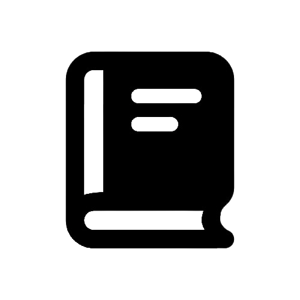
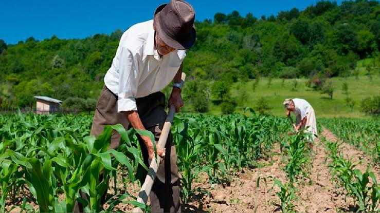
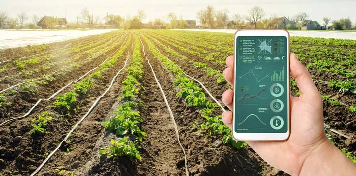
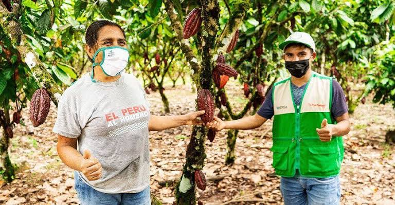
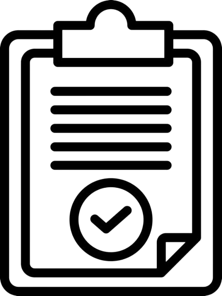
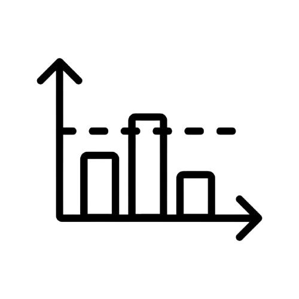

Independent Farmers
Focus: Rainfed potato and coffee

SMART AGRICULTURE FOR A BETTER TOMORROW
SumaqAgro transforms satellite and agricultural data into actionable insights to help you monitor crops, control costs, and improve production value.
ABOUT SUMAQAGRO

SumaqAgro was created to bridge the technology gap in potato and coffee-growing regions without requiring expensive ground sensors. We convert open satellite imagery and agronomic data into accessible monitoring, real-cost accounting, and quality certification tools, allowing farmers and agricultural organizations to make technically supported decisions.
OUR COMMUNITY
We work with those who make national food security possible.

Focus: Rainfed potato and coffee

Focus: Collective collection and traceability

Focus: Multi-field monitoring
VALUE-GENERATING TECHNOLOGY
Simple and powerful tools for better decision-making in the field.

Dashboard based on open satellite imagery to calculate vegetation indices (NDVI) and water stress without buying or installing physical ground hardware.

Reduces crop losses caused by undetected frosts and droughts by up to 25%.Module to log day labor, agricultural inputs, and machinery in real time. Automatically calculates unit cost per quintal or ton and sets your financial break-even point.
Generates verifiable digital reports with potato size grading or coffee cup scores, protecting your yield from arbitrary price cuts at collection points.
Centralized system for preventive technical advice and digital phytosanitary recipes to fight pests like coffee rust or Andean potato weevil.
PRODUCT DEMO
Demonstration Video
Play an overview video of SumaqAgro
PLANS
S/0
1 plot, basic NDVI, and day labor logging.
Start for freeS/189 /month
50 farmers, size and variety certification, report export.
Subscribe cooperativeS/89 /month
20 supervised farms, technical recipes, and advanced NDVI.
14-day free trialREAL RESULTS
Metrics supporting our commitment to smallholder farmers and testimonials from those who already trust SumaqAgro.
VOICES THAT INSPIRE US
“Now I know when to irrigate and how much each bag of potatoes costs me.”
Juan Huamán, potato farmer
“Digital certification opened up better export prices for us.”
Elena Vargas, coffee cooperative
THE PEOPLE BEHIND THE TECHNOLOGY
Five professionals committed to bringing precision agriculture to those who cultivate the future of Peru.
Domain Analyst / Requirements Lead
Team Leader / Scrum Master
UX/UI Designer / Product Designer
Software Architect
Product Owner
Join a community cultivating a better future through technology.
Register for free